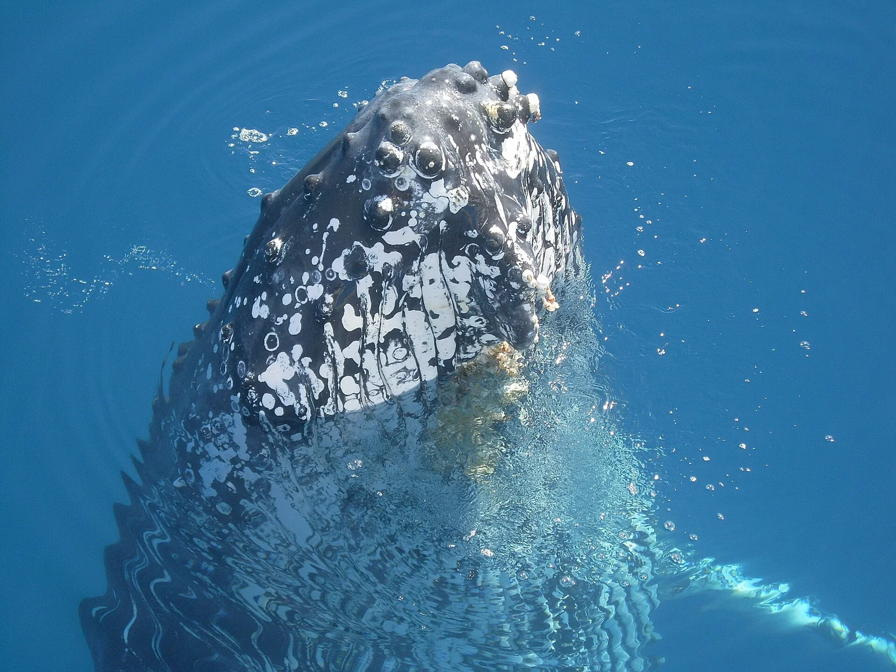

Hervey Bay
Queensland, Australie · paddle, kayak

Sur la Fraser Coast, Hervey Bay fait face à K’gari. Les plages et les opérateurs nautiques du front de mer permettent d’organiser une balade en paddle ou en kayak.
- Lieu
- Queensland, Australie
- Niveau
- Variable selon les conditions
- Activités
- paddle, kayak
- Type d'eau
- Mer / océan
- Coordonnées
- -25.28, 152.87 (position approximative du secteur)
Ouvrir dans Ocean Buddy Télécharger sur l'App Store
Source : Wikipédia · géographie du lieu.